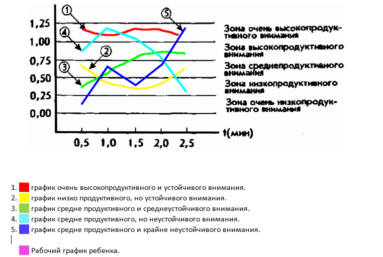

Ребенок перед началом исследования получает инструкцию следующего содержания:
Задание 1 – для детей 3 – 4 года.
Задание 2 – для детей 4 – 5 лет.
«Сейчас мы с тобой поиграем в такую игру: я покажу тебе картинку, на которой нарисовано много разных, знакомых тебе предметов. Когда я скажу слово "начинай", ты по строчкам этого рисунка начнешь искать и зачеркивать те предметы, которые я назову. Искать и зачеркивать названные предметы необходимо до тех пор, пока я не скажу слово "стоп". В это время ты должен остановиться и показать мне то изображение предмета, которое ты увидел последним. После этого я отмечу на твоем рисунке место, где ты остановился, и снова скажу слово "начинай". После этого ты продолжишь делать то же самое, т.е. искать и вычеркивать из рисунка заданные предметы. Так будет несколько раз, пока я не скажу слово "конец". На этом выполнение задания завершится».
В этой методике ребенок работает 2,5 мин, в течение которых пять раз подряд (через каждые 30 сек) ему говорят слова «стоп» и «начинай».
Экспериментатор в этой методике дает ребенку задание искать и разными способами зачеркивать какие-либо два разных предмета, например звездочку перечеркивать вертикальной линией, а домик — горизонтальной. Экспериментатор сам отмечает на рисунке ребенка те места, где даются соответствующие команды.
Задание 3 – для детей старше 6 лет.
«Сейчас мы с тобой поиграем в игру, которая называется "Будь внимателен и работай как можно быстрее"
Далее ребенку дается задание с кольцами Ландольта и объясняется, что он должен, внимательно просматривая кольца по рядам, находить среди них такие, в которых имеется разрыв, расположенный в строго определенном месте, и зачеркивать их. Работа проводится в течение 5 мин. Через каждую минуту экспериментатор произносит слово «черта», в этот момент ребенок должен поставить черту в том месте, где его застала эта команда. После того, как 5 мин истекли, экспериментатор произносит слово «стоп». По этой команде ребенок должен прекратить работу и в том месте бланка с кольцами, где застала его эта команда, поставить двойную вертикальную черту.

Оценка продуктивности
|
10 баллов — показатель S у ребенка выше, чем 1,25 балла. |
Оценка устойчивости внимания
10 баллов — все точки графика на рисунке 8 не выходят за пределы одной зоны, а сам график своей формой напоминает кривую 1.
8-9 баллов — все точки графика расположены в двух зонах наподобие кривой 2.
6-7 баллов — все точки графика располагаются в трех зонах, а сама кривая похожа на график 3.
4-5 баллов — все точки графика располагаются в четырех разных зонах, а его кривая чем-то напоминает график 4.
3 балла — все точки графика располагаются в пяти зонах, а его кривая похожа на график 5.
Выводы об уровне развития
10 баллов — продуктивность внимания очень высокая, устойчивость внимания очень высокая.
8-9 баллов — продуктивность внимания высокая, устойчивость внимания высокая.
4-7 баллов — продуктивность внимания средняя, устойчивость внимания средняя.
2-3 балла — продуктивность внимания низкая, устойчивость внимания низкая.
0-1 балл — продуктивность внимания очень низкая, устойчивость внимания очень низкая.
t (время работы (сек.)) |
30 |
30 |
30 |
30 |
30 |
150 |
N (количество просмотренных предметов) |
||||||
п (количество ошибок). |
||||||
S (продуктивность) |
||||||
Баллы (продуктивность) |
||||||
Характер деятельности ребенка:
Виды возможной помощи:
Стимулирующая помощьНаправляющая помощь:
Обучающая помощь: